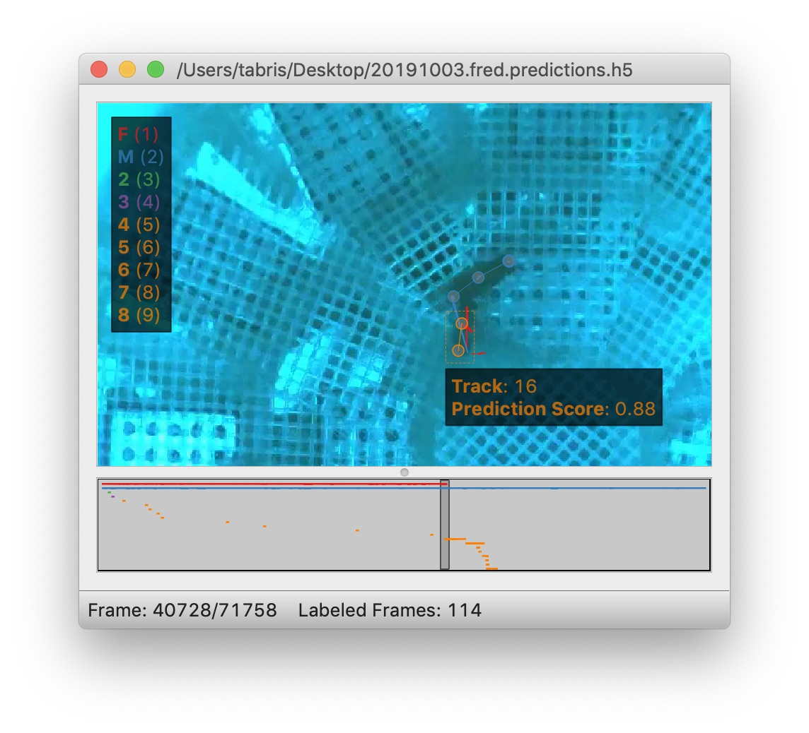

Tracking and Proofreading¶
This guide covers tracking methods and proofreading strategies for multi-animal pose estimation. For a step-by-step introduction, see the Tracking Tutorial and Proofreading Tutorial.
How Tracking Works¶
Tracking connects frame-by-frame pose predictions into continuous tracks (identities across frames). The tracker:
- Takes predictions from frame N
- Compares them to candidates from previous frames
- Assigns each instance to an existing track or creates a new one
Prediction and tracking are distinct processes—you can run tracking separately after inference to try different methods and parameters.
Tracking Methods¶
Candidates Method¶
How the tracker builds the pool of candidates to match against. This determines which previous instances are considered when assigning track IDs to new detections.
Fixed Window (Default)¶
Pools all instances from the last N frames together as matching candidates.
Frame: t-3 t-2 t-1 t (current)
┌──────────────────┐
Instances │ A B A B A B │ ? ? ← match against pooled candidates
└──────────────────┘
window_size=3
All instances from frames within the window are collected into a single candidate pool. When matching instances in the current frame, each is compared against this entire pool, and the best matches are assigned.
sleap-nn track -i video.mp4 -m models/ -t --candidates_method fixed_window --tracking_window_size 10
Pros:
- Simple and fast
- Works well when all instances are consistently detected
Cons:
- If a track is lost for several frames, its history gets pushed out of the window
- All tracks share the same temporal context
Best for: Most scenarios with reliable detections—good balance of speed and accuracy.
Local Queues¶
Maintains a separate history queue for each track ID. Each track remembers its own last N instances independently.
Track A: [A@t-5, A@t-4, A@t-3, A@t-2, A@t-1] ← own history
Track B: [B@t-3, B@t-2, B@t-1] ← own history (was occluded at t-5, t-4)
Frame t: ? ? ← each detection matched against per-track histories
When an instance disappears temporarily (e.g., due to occlusion), its track queue preserves its history. When the instance reappears, it can still be matched to its original track even if many frames have passed.
Pros:
- Supports max tracking: Since each track has its own queue, the system naturally maintains a fixed number of identities and prioritizes matching to existing tracks before spawning new ones
- Robust to temporary track breaks and occlusions
- Each track maintains its own temporal context
- Better identity preservation when instances disappear and reappear
Cons:
- Slightly more memory overhead
- Can be slower with many tracks
Best for: Experiments with a known, fixed number of animals—especially when you want to maintain consistent identities throughout the video. Also good for scenes with occlusions or when animals frequently leave and re-enter the frame.
Optical Flow¶
Uses optical flow (Xiao et al., 2018) to predict where instances will move, then uses these shifted positions as candidates.
Best for: Fast-moving animals where position changes significantly between frames.
Scoring Methods¶
How similarity is measured between instances and candidates.
| Method | Description | Use Case |
|---|---|---|
oks |
Object Keypoint Similarity—distance between keypoints, normalized | Default, works well for most cases |
euclidean_dist |
Euclidean distance between features | Simple and fast |
cosine_sim |
Cosine similarity between feature vectors | Good for image-based features |
iou |
Intersection over Union of bounding boxes | When instances have distinct spatial positions |
Set with --scoring_method:
Feature Types¶
What features are used for matching.
| Feature | Description |
|---|---|
keypoints |
All predicted keypoint positions (default) |
centroids |
Instance centroid only |
bboxes |
Bounding box coordinates |
image |
Image features from the model |
Set with --features:
Matching Methods¶
How instances are paired with candidates once similarity is computed.
| Method | Description |
|---|---|
hungarian |
Finds optimal global assignment minimizing total cost (default) |
greedy |
Picks best match for each instance in order |
Set with --track_matching_method:
Track Settings¶
Maximum Tracks¶
Limit the number of track identities. Once reached, no new tracks are created.
In the GUI, set via Predict > Run Inference:

Connect Single Track Breaks¶
When exactly one track is lost in frame N and exactly one new track appears in frame N+1, automatically connect them. Enable with the Connect Single Track Breaks checkbox in the GUI.
Track Window Size¶
How many previous frames to consider when building candidates. Larger windows are more robust but slower.
Track-Only Mode¶
Re-run tracking on existing predictions without re-running inference:
This is useful for trying different tracking parameters without recomputing poses.
Example Configurations¶
Fast-Moving Animals¶
Crowded Scenes¶
sleap-nn track -i video.mp4 -m models/ -t --candidates_method local_queues --tracking_window_size 10 --max_tracks 10
High Accuracy¶
sleap-nn track -i video.mp4 -m models/ -t --scoring_method oks --scoring_reduction mean --track_matching_method hungarian
Improving Tracking Results¶
If tracking results are poor:
- Try different methods: Change candidates method, scoring method, or enable optical flow
- Adjust track window: Increase
--tracking_window_sizefor more context - Limit tracks: Set
--max_tracksif you know the number of animals - Improve predictions: Poor frame-by-frame predictions lead to poor tracking—consider adding more training data
Proofreading¶
Once tracking is complete, you'll need to review and fix errors. There are two main types of mistakes:
Setting Up for Proofreading¶
- Enable Color Predicted Instances in the View menu
- Choose a good color palette:
- "five+" palette for small numbers of instances (makes later tracks stand out)
- "alphabet" palette for many instances (26 distinct colors)
- Set Trail Length > 0 to see where instances were in prior frames
Colors appear both on the video frame:

And on the seekbar:

You can edit palettes in the View menu.
Fixing Lost Identities¶
When the tracker fails to connect an instance to any previous track, creating a spurious new identity.
Strategy:
- Use Go > Next Track Spawn Frame to jump to frames where new tracks appear
- Select the instance with the new track identity
- Look at the track trail to determine which existing track it should belong to
- Hold the Show tracks legend key (see Keyboard Navigation) to see numbered tracks:

- While holding the key, type the number to assign the instance to that track (e.g., Command + 1 assigns to track "F")
Fixing Identity Swaps¶
When the tracker assigns instances to the wrong tracks (swapping identities between animals).
Strategy 1: Visual Inspection with Trails
- Set trail length to ~50 frames
- Use frame next large step to jump through predictions
- Look for crossed or tangled trails indicating swaps:

- When you find a swap, step through frames to find the exact frame
- Use Labels > Transpose Instance Tracks or the tracks legend to fix
Strategy 2: Velocity-Based Suggestions
- Open Labeling Suggestions panel
- Select velocity method
- Choose a stable node (body center, not appendages)
- Adjust threshold—higher means fewer suggestions

- Step through suggestions with Go > Next Suggestion
- Fix swaps as they're found
Propagating Fixes:
Enable Propagate Track Labels to apply track changes to all subsequent frames automatically.
Orientation Visibility¶
If instance orientation is hard to see, change edge style from lines to wedges in View > Edge Style:

Wedges point from source to destination nodes in your skeleton.